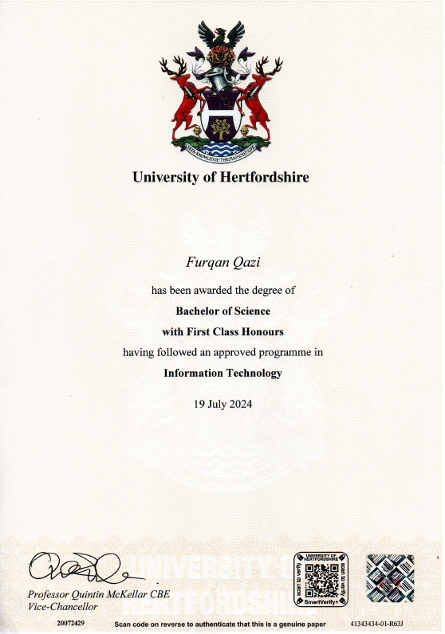
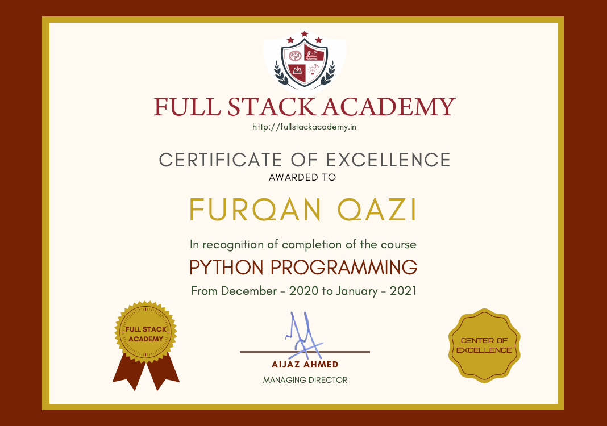
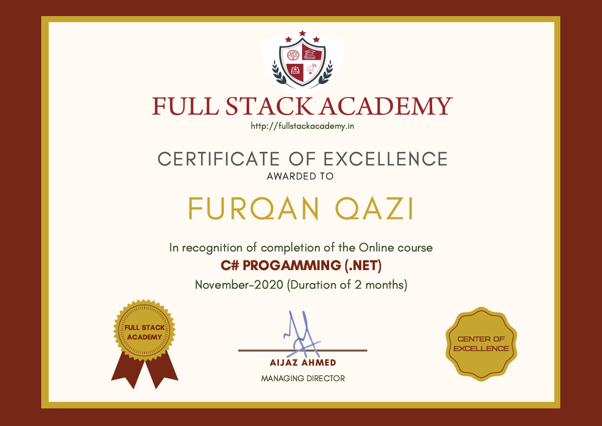
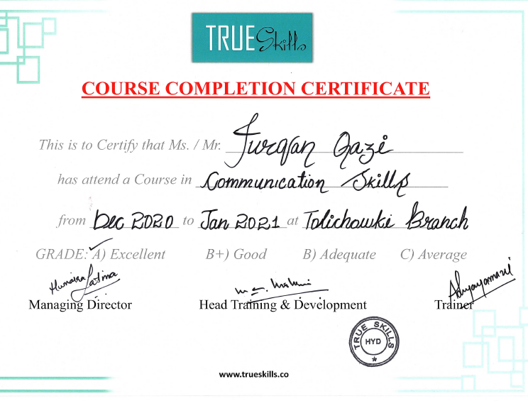
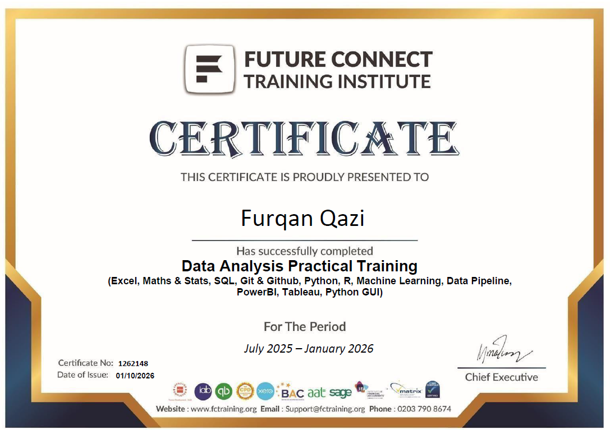
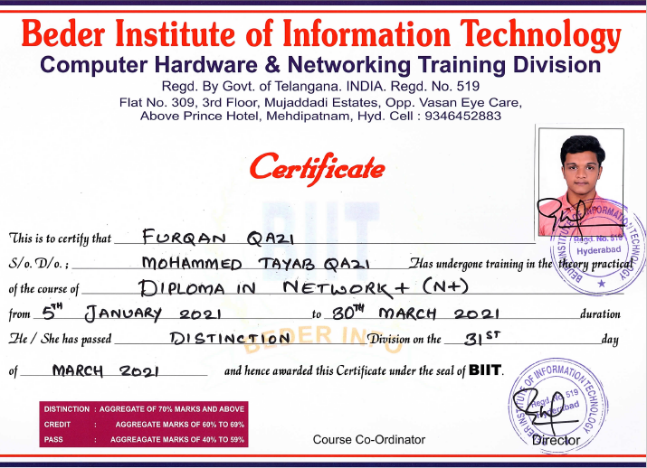
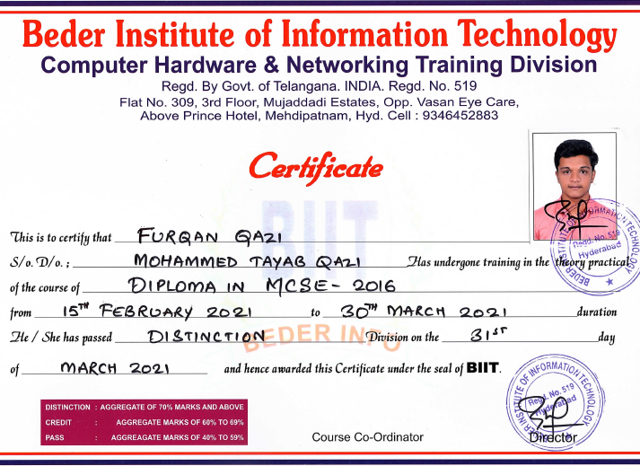

I craft UI & backend demons that explore the power of softwares & help others sharpen. People know me for turning complex
challenges into approachable solutions — the kind that make you say, "Wait, how did you do that?"
I am a software Developer Passionate about creating reliable and use-friendly digital solutions.
I enjoy solving complex problems, optimizing systems,and building applications that make a real impact. With experiance in various industries along with tech, ERP/CRM development, Database management, Ethical Hacking, Customer management on the top of this, I combine analytical thinking and effective communication to deliver RESULTS THAT MATTER.
I developed strong communication skills through a combination of professional experience and personal initiative.
Working in various retail roles, I learned how to interact effectively with diverse customers, resolve issues, and convey information
clearly under pressure.
In parallel, I advertised myself as a freelance developer, attracting clients and successfully earning around £3,000 by delivering
quality services. This required constant communication with customers, understanding their requirements, and providing timely updates to
ensure satisfaction.
Additionally, during both my academic projects and professional work, I honed my presentation skills, consistently delivering clear,
polished, and well-organized presentations that conveyed ideas confidently and professionally.
I developed strong problem-solving skills through my academic work, particularly during group projects where
technical challenges were common. In one project, my team struggled to implement cookie functionality in a
WordPress-based application we were developing. After analyzing the issue independently, I researched WordPress
hooks and PHP handling, tested multiple approaches, and successfully implemented cookies, resolving a blocker that
had stalled the entire project.
Beyond academics, I applied the same analytical mindset in real-world work environments. While working in a warehouse,
I identified inconsistencies in stock levels that suggested internal theft. I carefully analyzed shift patterns, inventory
movement, and access points, dedicating extra time outside normal hours to trace the issue. This investigation led to
identifying an employee responsible for shoplifting, protecting company assets and restoring operational integrity.
My ability to approach problems logically, persist through challenges, and find effective solutions resulted in
recognition and promotion in the workplace. Whether addressing complex technical issues or operational problems in
demanding environments, I consistently demonstrate strong problem-solving skills that deliver practical and impactful
results.
I developed strong time-management skills by successfully balancing my university academics alongside multiple professional responsibilities.
Managing coursework, exams, and project deadlines required careful planning, clear prioritization, and consistent discipline. I structured
my schedule efficiently to ensure that no responsibility was neglected.
At the same time, I maintained high performance in the workplace. By organizing tasks effectively and using time productively, I was able
to meet work commitments without compromising academic goals. This approach allowed me to deliver reliable results
across both environments.
As a result, I excelled academically while also receiving positive reviews in my professional roles. These experiences
strengthened my ability to work under pressure, adapt to demanding schedules, and consistently perform at a high level
skills that continue to support my growth as a professional.
I developed strong analytical thinking skills by approaching challenges methodically and breaking complex situations
into manageable parts. During my academic projects, I regularly analyzed requirements, identified constraints, and
evaluated multiple solution paths before implementation. This approach allowed me to anticipate issues early and design
solutions that were both efficient and scalable.
In one instance, while working on a software-based project, I noticed performance inconsistencies that were not immediately
obvious to the team. By carefully examining system behavior, data flow, and user interactions, I was able to pinpoint the
root cause and recommend structural improvements that significantly enhanced reliability. This demonstrated my ability to look
beyond surface-level symptoms and focus on underlying patterns.
I apply the same analytical mindset in professional environments by observing workflows, assessing risks, and making data-informed
decisions. Whether analyzing technical systems or operational processes, I consistently rely on logic, structured thinking, and
attention to detail to reach well-reasoned conclusions making analytical thinking one of my strongest professional skills.
I developed strong teamwork skills through my internship and academic experiences, where collaboration and clear
communication were essential. During my internship, I made it a priority to ask questions whenever I had doubts
instead of risking errors that could lead to larger issues. This approach helped me avoid mistakes,
and steadily build expertise in my role.
I perform particularly well in team-based environments when working on large or complex tasks that require shared
effort and coordination. At the same time, I recognize that smaller, well-defined tasks can often be completed more
efficiently when handled individually, and I am comfortable working independently when appropriate. This flexibility
allows me to adapt to different working styles while maintaining productivity and quality.
My experience in security roles further strengthened my ability to work as part of a team, as these roles demand
constant coordination, trust, and situational awareness. Additionally, during my academic projects, I was not only
a team member but often took on a leadership role by supporting teammates, clarifying tasks, and helping to deliver on time.
These experiences reflect my ability to collaborate effectively while also stepping up when leadership is needed.
I have always been a fast learner because I approach new challenges with curiosity and a strong foundational
understanding. The best part about technology for me is that I maintain a broad, minimal understanding across
multiple tools and concepts. This allows me to quickly identify what I already know, what I need to deepen, and where
I should focus my learning efforts. When I realize that deeper knowledge is required, I take initiative, & work toward mastering it.
This learning approach was clearly demonstrated when I transitioned into freelancing work that required Python,
even though my primary programming language was C#. Initially, the syntax and structure felt different, but my experience
with C# helped me quickly recognize similarities in logic, control flow, and object-oriented concepts. Instead of starting
from scratch, I mapped my existing knowledge to Python, allowing me to understand its style in a short period of time.
By actively comparing concepts and practicing through real tasks, I was able to overcome challenges efficiently and start
delivering freelance work using Python with confidence. This experience reinforced my ability to learn new technologies rapidly,
adapt to changing requirements, and apply knowledge practically. Whether it is a new programming language or a new technical
tool, I consistently demonstrate the ability to learn fast, overcome challenges, and implement solutions effectively.






